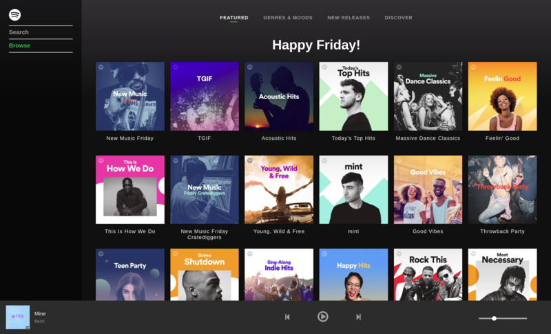

Spotify Clone

Clone of Spotify's web client (work-in-progress). Uses free-tier API with limited functionality - songs are limited to 30 second preview and some songs don't have preview at all.
Technologies used: React, Redux, SCSS, styled-components.
Just like original, my clone doesn't work on mobile :)
I started this project in May 2017 to practice my React skills, but left unfinished. In February 2018 I decided to finally finish it and it's my current working project.